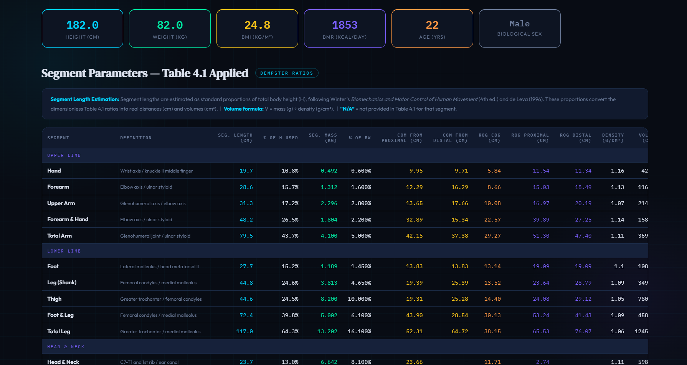

The University of Queensland (UQ) — TIET–UQ Centre of Excellence
Research Intern — R3: Exoskeleton-Enabled Rehabilitation
Patiala, PunjabJun 2025 – Present
The problem
A robot can move perfectly and still move a human badly.
My role
That question drives my work on the mechanical and experimental sides of R3, connecting exoskeleton development with the human movement it is supposed to assist.
What I worked on
- Developed an experimental workflow spanning exoskeleton CAD and mechanical development, human-motion capture, force measurement and muscle-activity sensing using SolidWorks, FEA, Qualisys, AMTI force plates and Noraxon EMG.
- Turned experimental gait data into engineering evidence: lower-limb kinematics, gait cycles, Centre of Pressure (COP) and Ground Reaction Forces (GRF) for iterative evaluation of the exoskeleton system.
Mentors: Dr. Ashish Singla, Dr. Sachin Kansal, Alejandro Melendez-Calderon (UQ)
